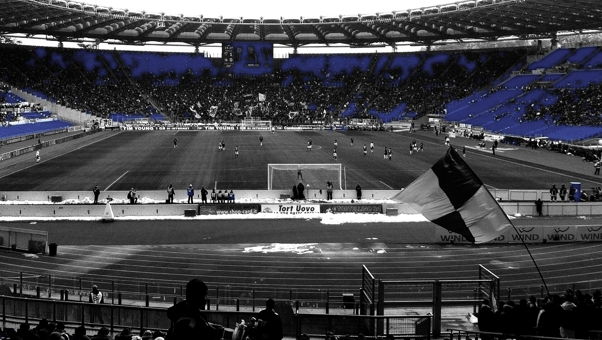
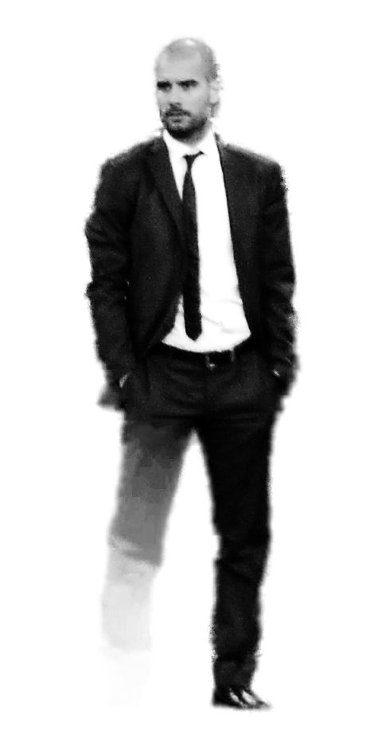
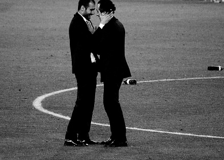

ROMA · ESTADIO OLÍMPICO · FOTO: GAÚCHO, CC BY-SA 3.0

AFICIÓN EN EL OLÍMPICO (2012) · FOTO: GARY DENHAM, CC BY-SA 2.0
FICHA · 27 DE MAYO DE 2009

FICHA · CAMP NOU, 2010
CALENTAMIENTORECREACIÓN
7:00
ENTRENADOR
PARA EL PARTIDO
−10:00
«SIN DECIR UNA PALABRA MÁS» · EL PAÍS, 2009
LA FINALROMA · 2009

GUARDIOLA TRAS LA FINAL, ROMA, 27/05/2009 FOTO: FUNNYDAE, CC BY 2.0
FINAL · ROMARECREACIÓN
BARCELONA
MAN. UNITED
0
–
0
FOTOS: GAÚCHO (CC BY-SA 3.0) · GARY DENHAM (CC BY-SA 2.0) · OEMAR (CC BY 2.0) · FUNNYDAE (CC BY 2.0), VÍA WIKIMEDIA COMMONS · VESTUARIO, PANTALLA Y FICHAS: RECREACIÓN FUENTES: BBC SPORT · EL PAÍS (VÍA IRISH EXAMINER), 2009